✨ A Importância da Conexão
A relação entre campo e cidade é dinâmica, profunda e indispensável para o funcionamento da sociedade. Embora possam parecer mundos distintos, ambos estão entrelaçados por uma rede de trocas econômicas, sociais, culturais e ambientais que se retroalimentam constantemente. No campo, é onde se originam os alimentos que abastecem as mesas urbanas, a matéria-prima que movimenta indústrias e grande parte da energia que ilumina lares e empresas. Além disso, o meio rural preserva saberes tradicionais, práticas sustentáveis e formas de vida que dialogam com o cuidado à terra e à natureza. A cidade, por sua vez, oferece ao campo acesso à tecnologia, inovação, centros de pesquisa, infraestrutura de transporte e mercados consumidores. É também nos espaços urbanos que se concentram os serviços de saúde, educação, comunicação e comércio, essenciais para o desenvolvimento das comunidades rurais. Essa conexão é vital: quando fortalecida de forma justa e equilibrada, promove segurança alimentar, crescimento econômico sustentável, inclusão social e valorização da diversidade cultural. Por isso, compreender e valorizar essa interdependência é um passo fundamental para formar cidadãos mais conscientes, comprometidos com um futuro mais colaborativo e integrado.
Esta página faz parte do projeto Agrinho 2025 – Categoria Experiência Pedagógica. Seu objetivo é sensibilizar os estudantes sobre a interdependência entre diferentes modos de vida.

🐝 A Vida das Abelhas
As abelhas desempenham um papel indispensável na manutenção do equilíbrio ecológico e na produção de alimentos. Consideradas as maiores agentes polinizadoras da natureza, elas são responsáveis por fertilizar mais de 70% das culturas agrícolas utilizadas na alimentação humana. Durante o voo em busca de néctar, as abelhas transportam grãos de pólen de uma flor para outra, promovendo a polinização cruzada. Esse processo é essencial para a formação de frutos e sementes em diversas espécies vegetais. Sem a ação das abelhas, alimentos como maçãs, morangos, melancias, abacates, maracujás e até o café seriam drasticamente reduzidos ou deixariam de existir. Além da importância econômica, as abelhas contribuem para a diversidade da flora nativa, a saúde dos ecossistemas e até mesmo a beleza dos jardins urbanos. São aliadas silenciosas do agricultor, da natureza e do futuro da alimentação. Entretanto, o uso indiscriminado de agrotóxicos, o desmatamento, a urbanização desordenada e as mudanças climáticas têm colocado essas polinizadoras em risco. Preservar as abelhas significa proteger a biodiversidade, garantir a segurança alimentar e cultivar a vida em todas as suas formas.
Conheça ações sobre produção de mel no Brasil 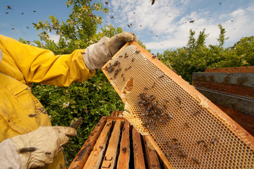⚡ Usinas Hidrelétricas
As usinas hidrelétricas são fontes estratégicas de geração de energia elétrica, utilizando a força da água em movimento — geralmente de rios represados — para acionar turbinas e transformar energia mecânica em eletricidade. No Brasil, país com abundantes recursos hídricos, a energia hidrelétrica representa a principal matriz energética, sendo responsável por mais de 60% da eletricidade consumida. Essa energia é fundamental para o funcionamento de praticamente todos os setores da sociedade. Nas cidades, ilumina residências, escolas, hospitais, indústrias e sistemas de transporte. No campo, tem um papel igualmente decisivo: é utilizada para operar bombas de irrigação, sistemas de ordenha, silos climatizados, equipamentos agrícolas e até para conectar propriedades rurais à internet e ao mundo digital. A presença da energia elétrica no meio rural amplia as possibilidades de produção, armazenamento e comercialização de alimentos, além de melhorar significativamente a qualidade de vida das famílias que vivem longe dos centros urbanos. Compreender o funcionamento de uma usina hidrelétrica, seus impactos ambientais e sua importância estratégica é essencial para formar cidadãos mais conscientes sobre o uso sustentável dos recursos naturais e a interdependência entre o progresso urbano e a vida rural.
Uma visita pedagógica a uma usina pode transformar o olhar dos alunos sobre sustentabilidade e inovação tecnológica no Brasil.
Saiba mais sobre energia hidrelétrica
🍽️ Alimentos: Do Campo à Cidade
A jornada que leva o alimento do campo até a mesa é longa, complexa e cheia de conexões. Conhecida como logística alimentar, essa cadeia envolve diversos agentes: produtores rurais que cultivam e colhem, transportadores que percorrem estradas e rodovias, comerciantes que organizam a distribuição e consumidores que escolhem o que comprar e consumir. Esse processo acontece todos os dias, garantindo que frutas, verduras, legumes, grãos, carnes, laticínios e tantos outros produtos cheguem frescos e em boas condições aos supermercados, mercearias, feiras e restaurantes das cidades. Trata-se de um sistema essencial para a segurança alimentar, a economia e a saúde da população. Ao mesmo tempo, essa cadeia revela a profunda interdependência entre o meio rural e o urbano. Sem o campo, não há alimento. Sem a cidade, não há escoamento, valorização ou inovação na produção. Na escola, esse tema pode ser explorado de forma prática e significativa por meio de atividades como entrevistas com agricultores familiares, visitas a feiras livres, preparação de receitas tradicionais ou montagem de uma horta comunitária. Essas vivências ajudam os alunos a compreender o valor do trabalho no campo, o impacto das escolhas alimentares e o papel que cada um desempenha nesse ciclo vital.
Conheça o Sistema FAEP 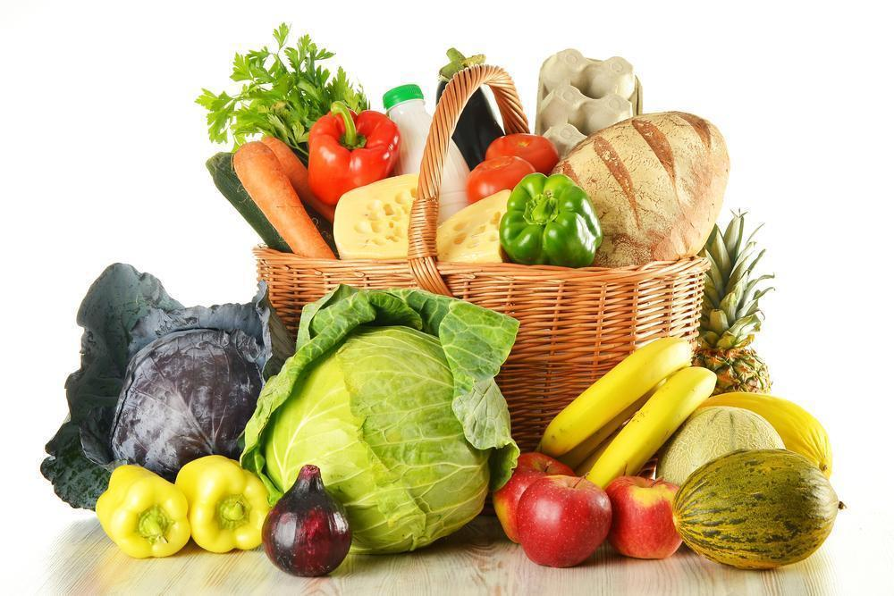🌐 Tecnologia no Campo
A agricultura contemporânea está passando por uma verdadeira revolução digital, impulsionada por ferramentas tecnológicas que tornam o trabalho no campo mais eficiente, sustentável e inteligente. Essa transformação é conhecida como agricultura de precisão. Por meio do uso de sensores, GPS, imagens de satélite, drones, softwares de monitoramento e conectividade rural, os produtores conseguem mapear o solo, prever o clima, calcular a quantidade ideal de água e insumos, além de acompanhar em tempo real o desenvolvimento das lavouras e a produtividade por área. Com esses dados, é possível reduzir desperdícios, otimizar recursos naturais, diminuir os impactos ambientais e aumentar a produção de forma mais sustentável. Máquinas modernas, por exemplo, aplicam fertilizantes apenas onde é necessário, evitando excessos. Drones sobrevoam plantações para identificar pragas ou deficiências nutricionais, antecipando problemas e melhorando os resultados. Esse cenário representa uma oportunidade educativa riquíssima. Ao estudar as tecnologias empregadas no campo, os alunos podem compreender como a inovação transforma a realidade rural, gera empregos qualificados, valoriza a ciência brasileira e contribui para uma agricultura mais justa, acessível e conectada ao futuro.
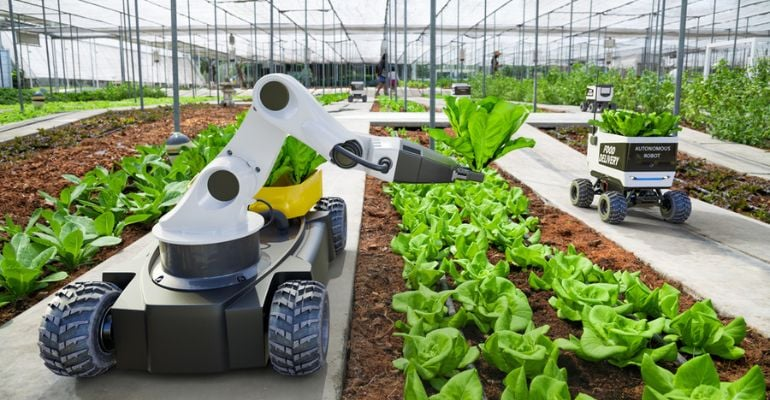 Leia mais sobre conectividade rural🌿 Hortas Escolares
As hortas escolares são espaços vivos de aprendizado, onde os estudantes colocam em prática conhecimentos de ciências, matemática, geografia e cidadania. Mais do que plantar, os alunos desenvolvem hábitos saudáveis, aprendem a trabalhar em equipe e exercitam o cuidado com o meio ambiente. Com poucos recursos, é possível cultivar hortaliças como alface, cebolinha, cenoura e manjericão em pequenos canteiros, garrafas PET ou caixas recicladas. Além de fortalecer a alimentação escolar, as hortas despertam o senso de responsabilidade e o vínculo com a terra, aproximando o cotidiano urbano das práticas do campo.
Com poucos recursos, é possível cultivar cebolinha, alface, cenoura e manjericão em pequenos canteiros, garrafas PET ou caixas recicladas.
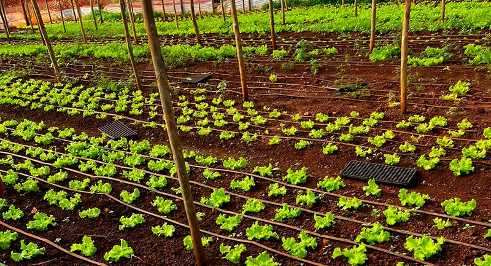 Veja exemplo de horta escolar🍇 A Produção de Uvas: Tradição e Tecnologia
A produção de uvas é uma das atividades agrícolas que mais representa a união entre tradição e inovação. Pequenos e médios produtores rurais cultivam uvas com técnicas passadas entre gerações, ao mesmo tempo em que utilizam irrigação controlada, estufas e acompanhamento digital do solo e do clima.
No Paraná, por exemplo, municípios como Marialva se destacam pela produção de uvas de mesa e para vinhos artesanais. Essas uvas chegam à cidade em feiras, supermercados e festivais que valorizam a cultura da colheita.
Esse ciclo envolve agricultores, distribuidores, consumidores e escolas, e é uma rica oportunidade pedagógica. Os estudantes podem estudar o ciclo da videira, o papel da poda, os tipos de uva, e como a agricultura familiar contribui para a economia local.
Conheça a Festa da Uva de Colombo 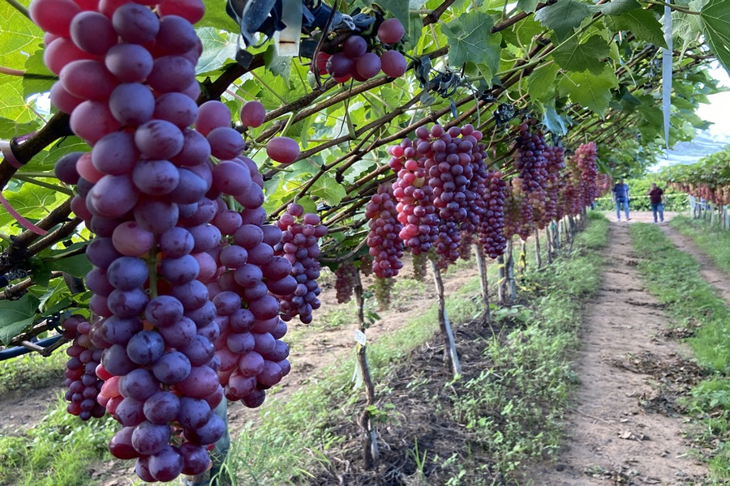📚 Do Meu Mundo, eu Conto
Os alunos foram convidados a entrevistar agricultores e agricultoras da comunidade, registrando histórias de vida, receitas, saberes tradicionais e memórias afetivas do campo. Esses encontros, repletos de afeto e aprendizado, revelaram vozes potentes e experiências muitas vezes invisibilizadas. A partir dessas entrevistas, os estudantes passaram a recontar essas vivências em forma de narrativa, unindo realidade e imaginação. Com criatividade, sensibilidade e orientação pedagógica, deram vida a personagens, cenários e enredos que retratam o valor do campo em suas múltiplas dimensões. O resultado foi a criação de uma coleção de livros infantis ilustrados, intitulada “Do Meu Mundo, eu Conto”. Cada livro é um elo entre gerações, um convite à valorização cultural e uma forma de mostrar que o conhecimento do campo também é parte fundamental da construção de um futuro mais humano e conectado. “Do Meu Mundo, eu Conto”.

 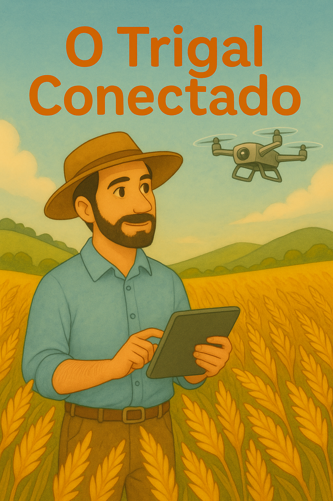
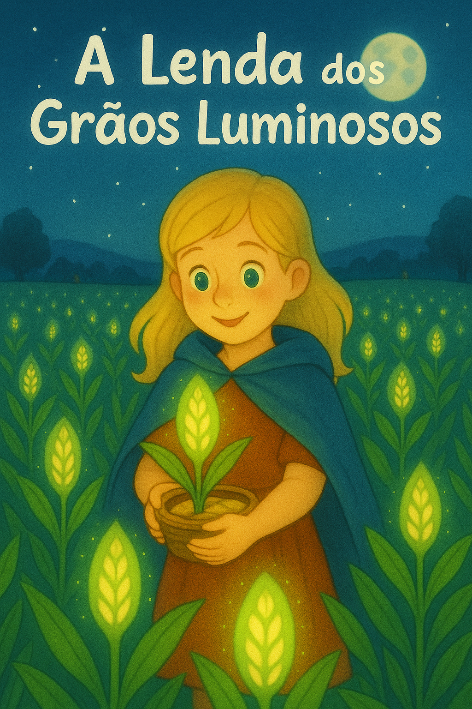
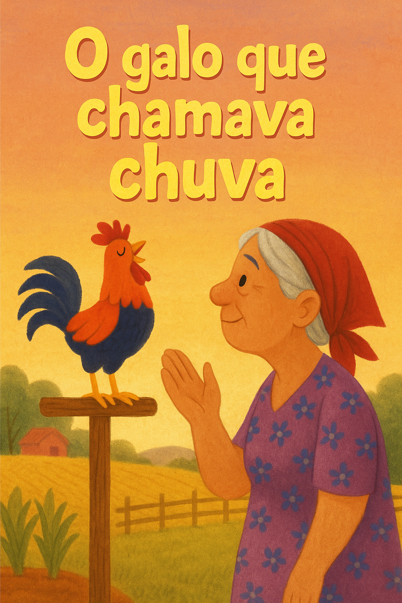
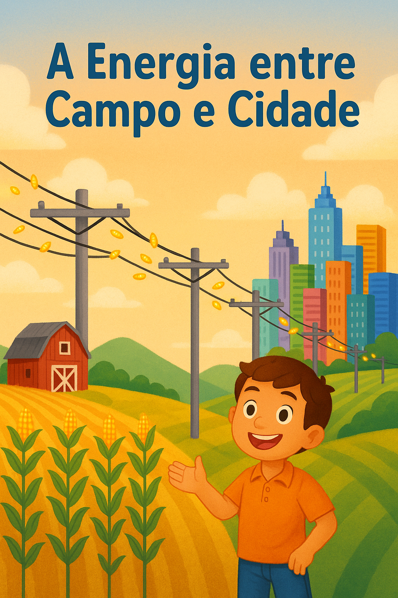
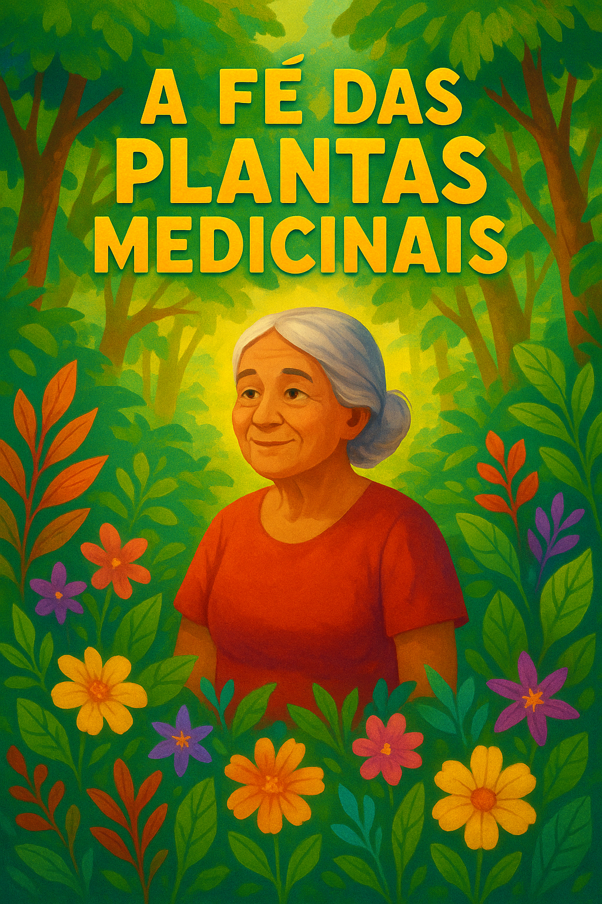
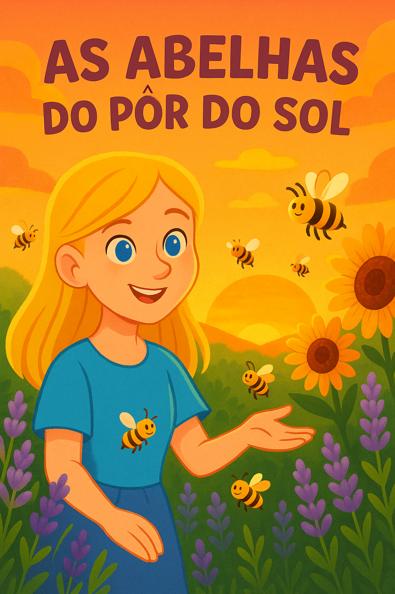
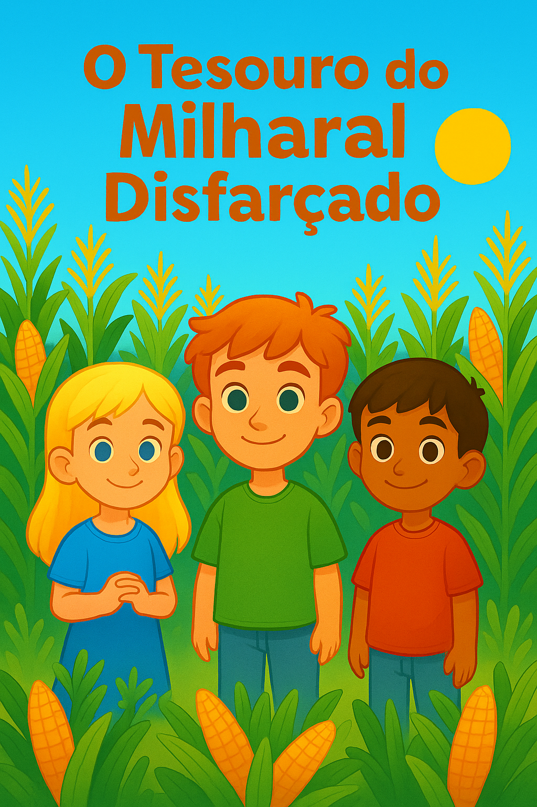
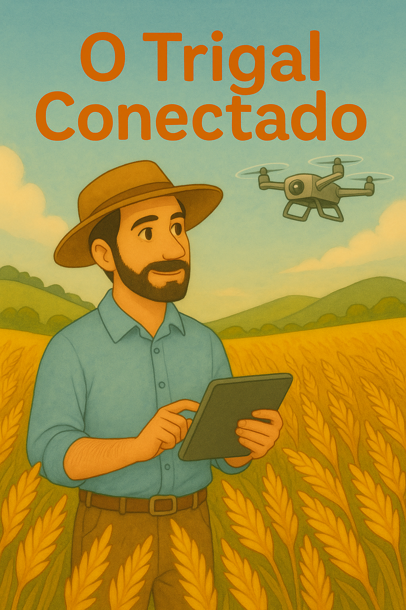
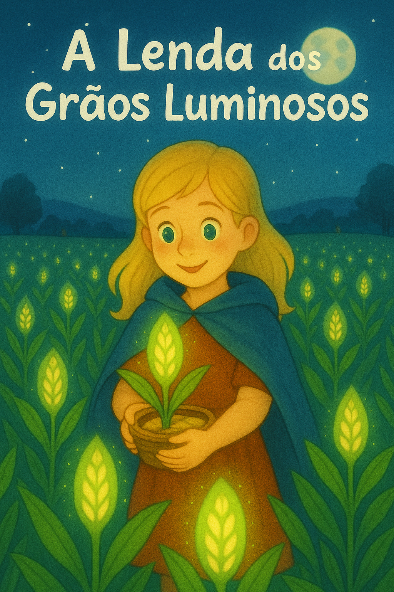
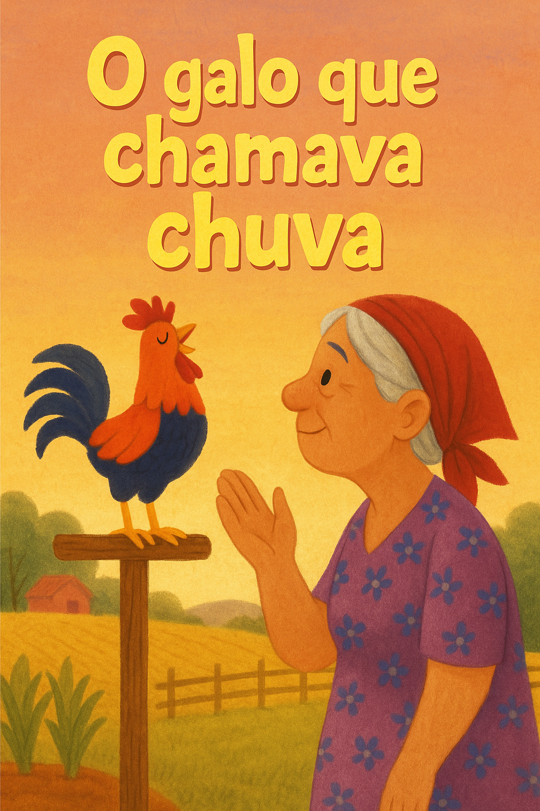
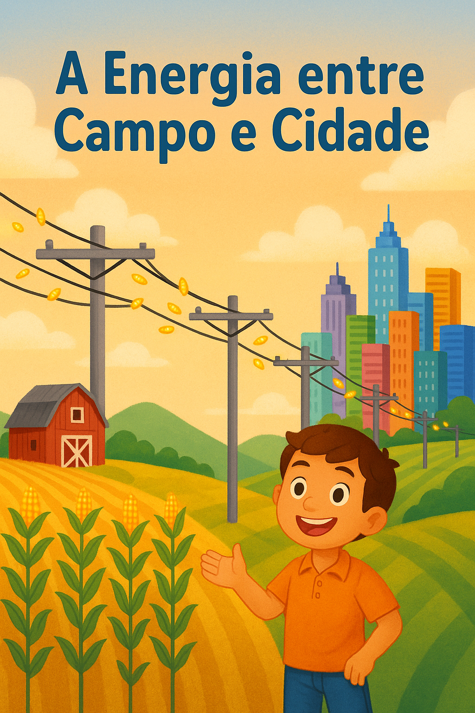
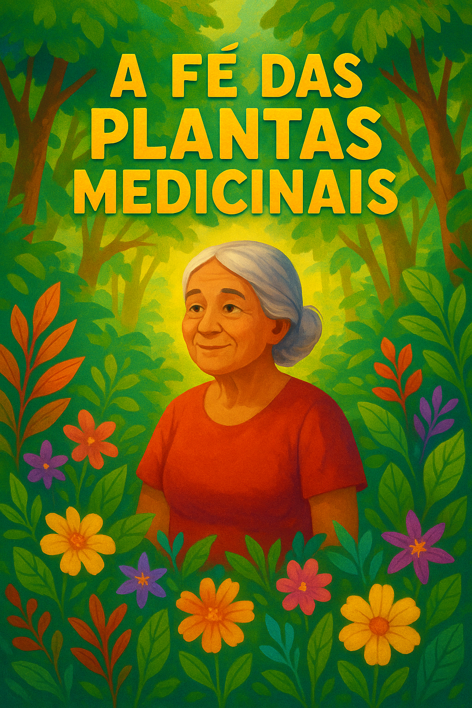
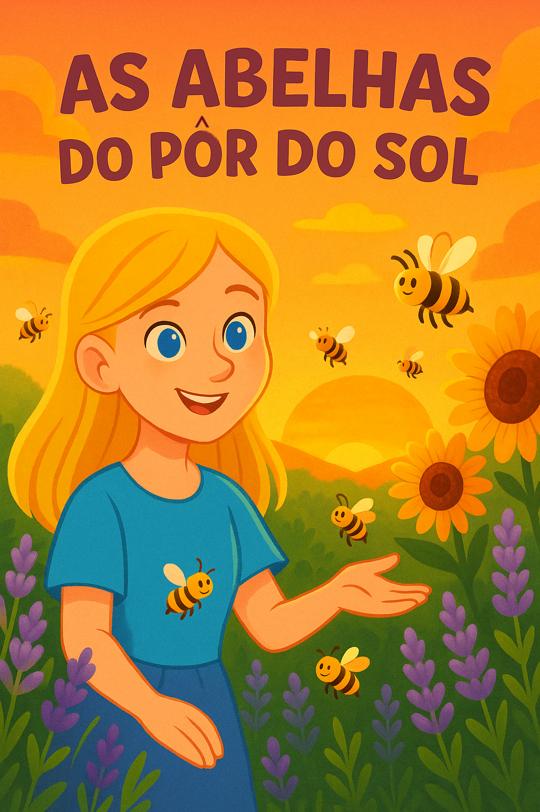
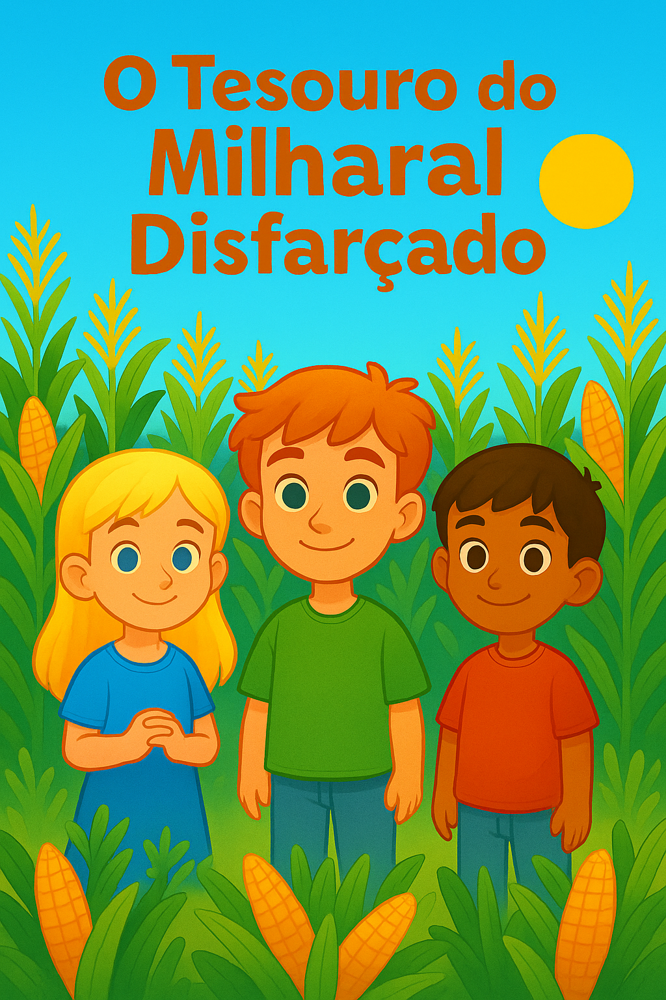
A coleção “Do Meu Mundo, eu Conto” foi pensada para ir além dos muros.da nossa escola. A intenção é que outras instituições de ensino também possam se encantar, refletir e trabalhar com essas histórias que valorizam a cultura do campo e promovem conexões significativas entre gerações e territórios. Se sua instituição ou projeto deseja adquirir a coleção e levar essa experiência transformadora para seus estudantes, entre em contato. Será uma alegria compartilhar esses saberes!